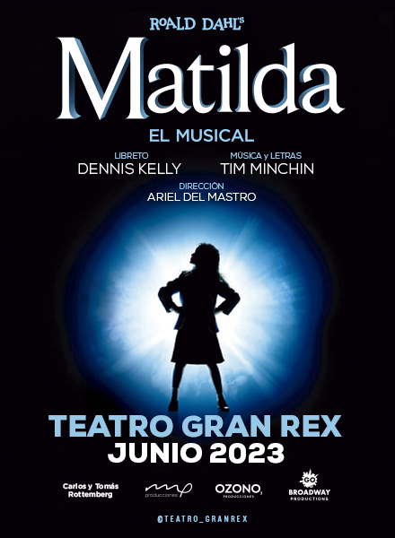

Restaurantes Múltiples Friendly

Son muchas las veces en que vas a un lugar pensando que hay algo para que los chicos se entretengan y no es así. Quizá lo encontraste en Internet pero la nota o sugerencia es vieja, o ese lugar ya no existe o dejó que considerar a los niños como clientes. Es muy frecuente que ésto ocurra y los padres lo sabemos.
Por eso nos propusimos hacer una nota muy chequeada sobre lugares para comer con chicos en Buenos Aires en 2020 y alrededores, contándote lo más preciso posible cuál es la propuesta y qué podés encontrar.
Si querés zafar de los fast food cuando salís en familia, compartimos muy buenas opciones para que grandes y chicos la pasen bien cuando salen a comer afuera.
Para comer afuera con chicos en Buenos Aires y alrededores es importante tener en cuenta qué propone cada lugar y para qué edades. Hay lugares para todos los gustos: con plaza blanda y/o pelotero, con animadoras, con onda artística o más electrónica (con consolas y demás), con juegos en otro piso o pegado a tu nariz, al aire libre o en una pecera vidriada, con juegos de mesa o clásicos como el metegol, maquilladoras y hasta payasos. Lo importante es conocer un poco antes de definir.
Matilda el Músical

La obra éxito de Broadway y el West End Londinense llega al Teatro Gran Rex por 8 únicas semanas en Junio 2023.
Basado en la homónima novela de Roald Dahl, autor que ha vendido más de 250 millones de libros, y que ha inspirado la icónica película infantil de los 90 es una megaproducción que lleva presentándose, con gran éxito mundialmente: 12 años en Londres y 4 años en cartel en Broadway con más de 1.500 representaciones, 99 premios internacionales y más de 10 millones de espectadores que ya la vieron.
Matilda, el musical cuenta la historia de una niña inteligente y especial enamorada de la lectura a la que le encanta inventar historias para escapar de la realidad, una forma de huir de unos padres que la tratan con indiferencia. Un buen día sus padres toman la decisión de enviarla a una escuela dirigida por una despiadada directora, la aterradora Tronchatoro. Con la ayuda de la Señorita Honey, Matilda iniciará un nuevo camino en el que vivirá divertidas experiencias y asombrosos descubrimientos. Una historia de todo lo que se puede conseguir con imaginación, conocimientos y perseverancia.
Dirigida por Ariel Del Mastro, esta producción de ROALD DAHL’S MATILDA, EL MUSICAL, fue autorizada por Music Theatre International y contará con más de 25 actores en escena cantando y bailando en vivo y 3 elencos de niños de entre 9 y 12 años.